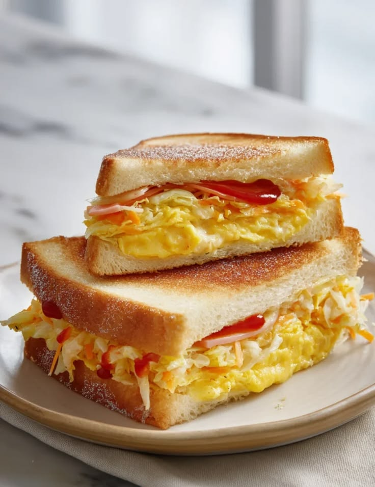

Korean-Style Egg Toast
Inspired by Korean street food: a fluffy egg and cabbage patty on buttery toast.

Ingredients
- 2 slices of bread
- 2 eggs
- 1/4 cup of finely shredded cabbage
- 1 slice of cheese
Equipment
- Non-stick pan
- Mixing bowl
- Fork
- Spatula
Instructions
- Beat the eggs in the bowl and stir in the cabbage.
- Melt a little butter in the pan on medium heat. Pour in the egg mixture and shape it into a square about the size of the bread.
- Cook for 2 to 3 minutes, flip, and cook 1 to 2 more minutes until fully set. Place the cheese on top to melt.
- Toast the bread, put the egg on one slice, and top with the second slice. Cut in half and let it cool slightly.
Ingredient Notes
Contains eggs, wheat, and milk. Ask an adult to help with the stove. Make sure the egg is cooked all the way through.
Make It Your Own
Add a little ketchup, a sprinkle of sugar for the classic sweet-savory taste, or sliced ham.